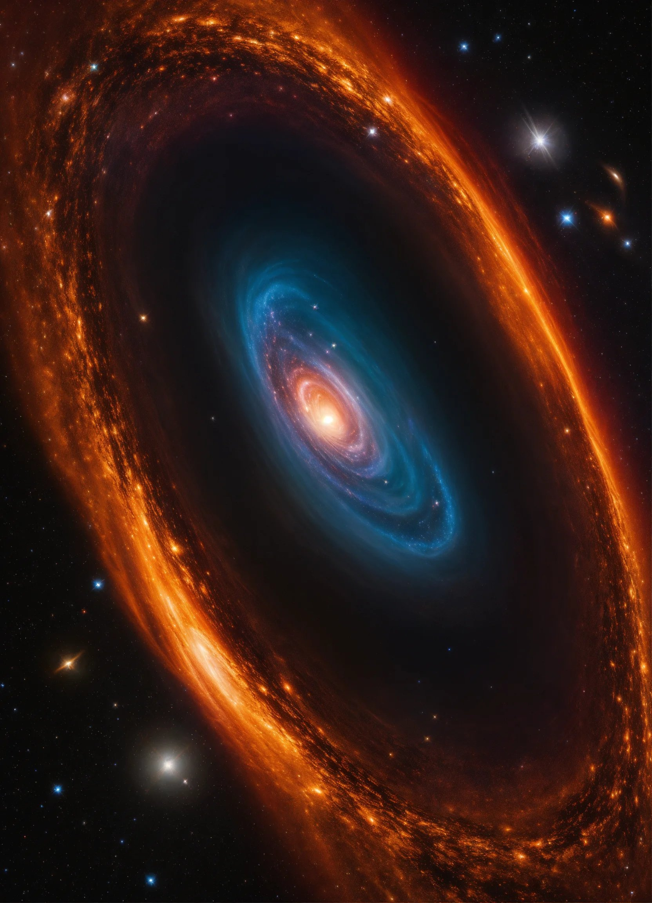
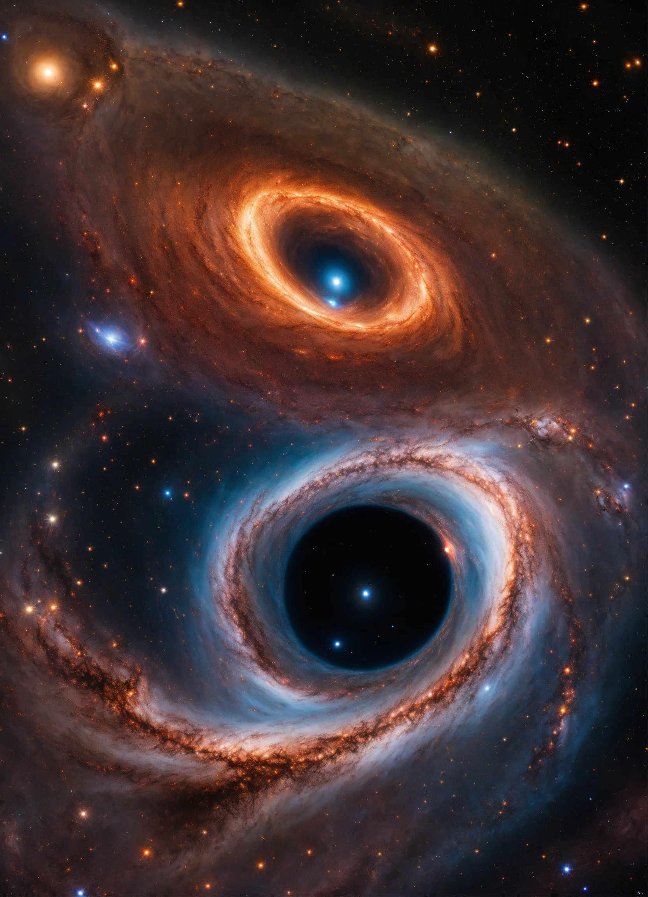

Les Formations des Trous Noirs
Introduction
Les trous noirs sont des phénomènes cosmiques fascinants qui se forment à la suite de l'effondrement gravitationnel d'étoiles massives. Cette formation résulte d'une concentration extrême de masse dans une région de l'espace, créant une force gravitationnelle si puissante que rien, même la lumière, ne peut s'en échapper.

Formation des Trous Noirs Stellaire
Les trous noirs stellaires naissent de l'effondrement gravitationnel d'une étoile massive en fin de vie. Lorsqu'une étoile épuise son carburant nucléaire, la pression exercée par la fusion cesse, laissant la gravité comprimer la matière restante en un espace infiniment petit, formant ainsi un trou noir stellaire.
Formation des Trous Noirs Supermassifs
Les trous noirs supermassifs, présents au centre de nombreuses galaxies, sont le résultat de processus complexes. Ils peuvent se former par accrétion de masse au fil du temps, par fusion de trous noirs plus petits, ou encore par des mécanismes encore mal compris. Les observations suggèrent que de nombreux trous noirs supermassifs ont été formés dans les premiers stades de l'univers.
Importance Cosmologique
Les trous noirs jouent un rôle crucial dans l'évolution et la dynamique des galaxies. Leur influence sur l'environnement cosmique, notamment à travers les phénomènes de jets de particules et d'accrétion de matière, est au cœur de nombreuses recherches en astrophysique.